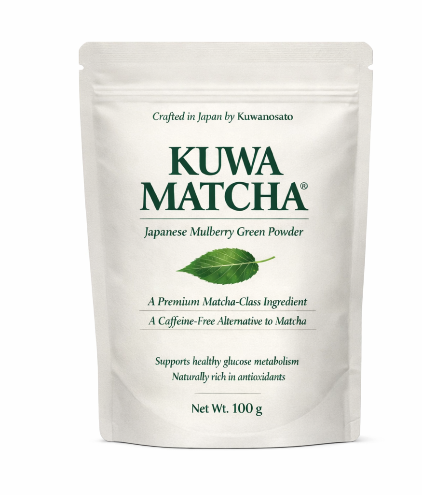
100g Pouch
Kuwa Matcha Pouch
A premium retail pouch for customers seeking a versatile daily-use format. The flagship Kuwanosato format for home and everyday use.
Shop NowFrom Yamanashi, Japan
Kuwa Matcha is a premium Japanese mulberry green powder from Kuwanosato in Yamanashi, Japan. Naturally caffeine-free and vibrant in color — designed for beverages, desserts, and modern daily rituals.
Japanese Source
Kuwanosato brings a Japanese source story to a category often presented without context. Rooted in Yamanashi and connected to mulberry heritage, the brand positions mulberry not as a generic wellness ingredient, but as a premium cultivated product with culinary and cultural value.
Mulberry has deep ties to Japanese agricultural tradition — long cultivated alongside sericulture and valued for its remarkable leaves. Kuwanosato draws from this heritage to deliver an ingredient that is traceable, refined, and worthy of the modern cup.
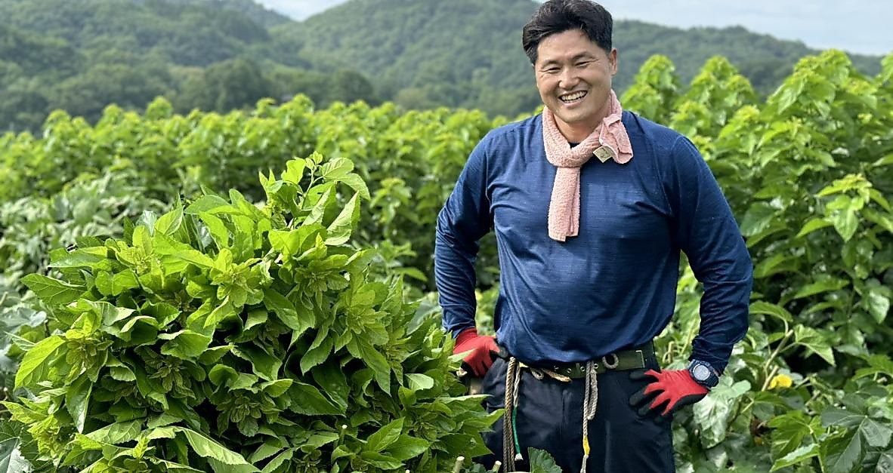
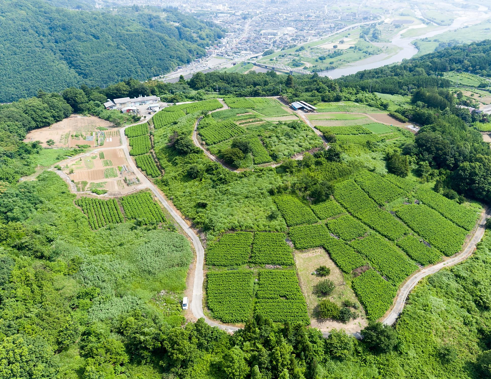
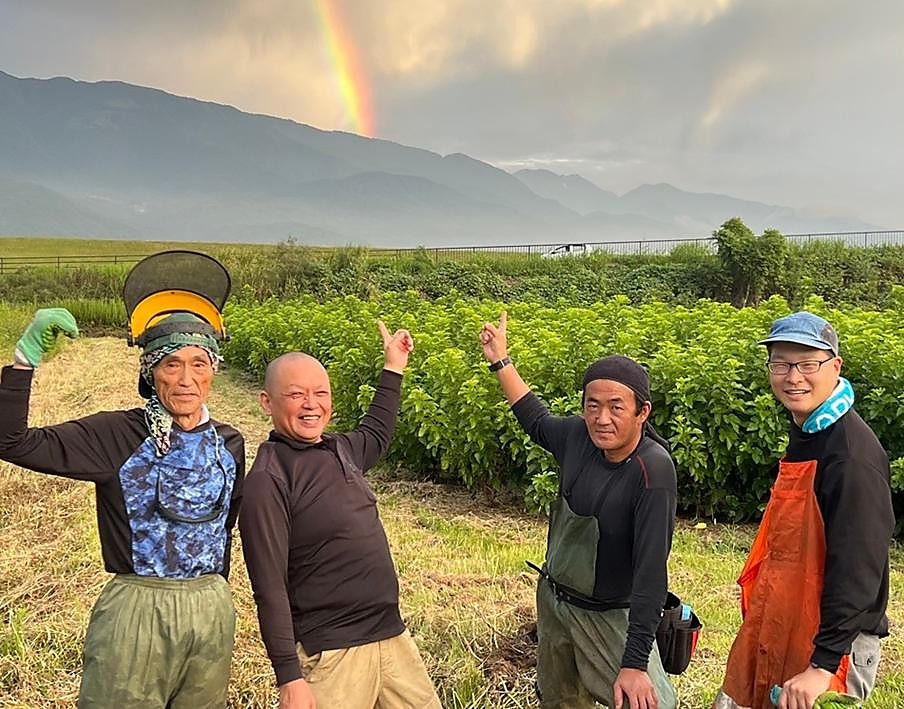
A source-led ingredient story built around place, craft, and credibility — from Yamanashi, Japan to the modern table.
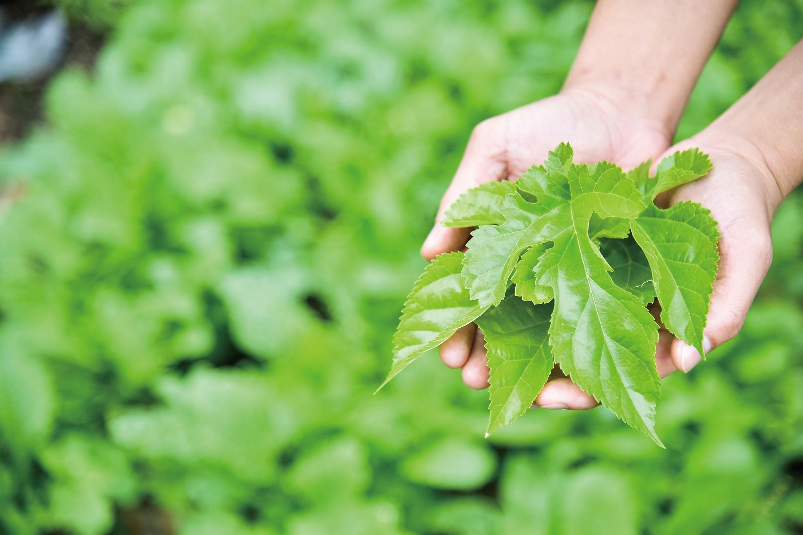
Mulberry has deep ties to Japanese cultivation and traditional agricultural knowledge spanning generations of care.
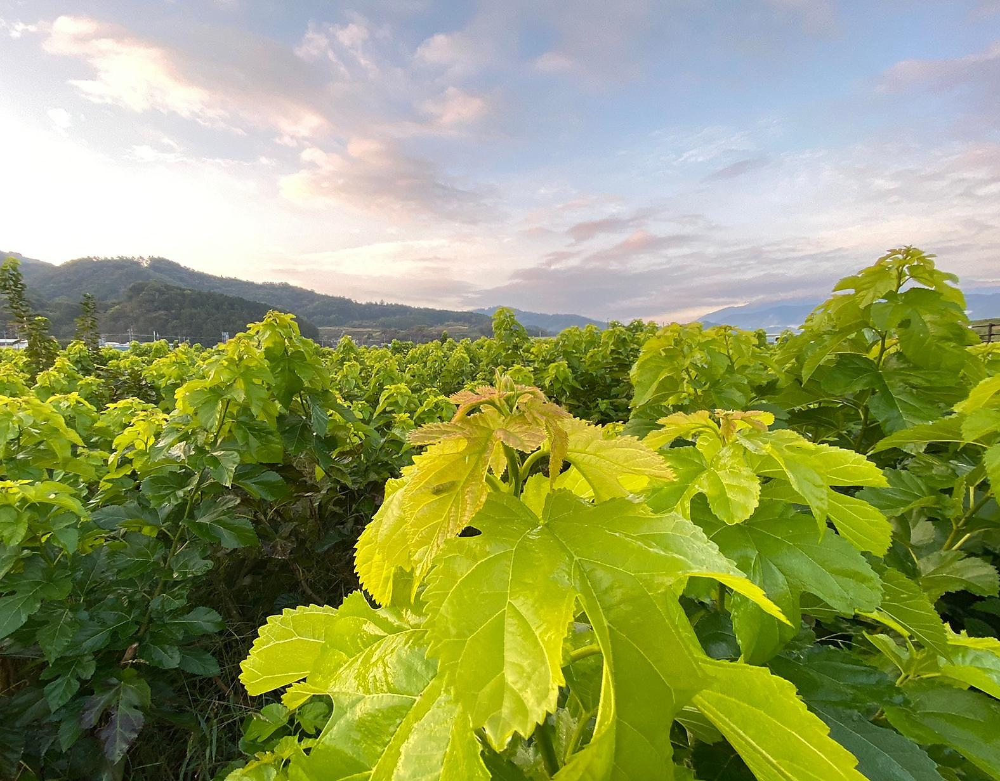
Designed to feel refined, versatile, and trustworthy — from the packaging through to the finished cup.
Wellness Profile
Mulberry is valued for naturally occurring compounds and nutrient content that continue to make it relevant in modern wellness conversations. The highlights below are educational and reflect what mulberry is known for — not medical claims.
Mulberry is widely discussed in relation to DNJ, a naturally occurring compound that helps define its wellness profile and distinguishes it from conventional green powders.
GABA is one of the better-known compounds associated with mulberry's broader functional story and its place in contemporary wellness culture.
Mulberry leaf powder is often appreciated for its antioxidant-rich profile and vibrant green color — markers of quality that resonate across wellness and culinary contexts.
Mulberry powder can be framed around everyday nutritional relevance and routine-friendly use — extending its appeal well beyond the wellness aisle.
Culinary Applications
Kuwa Matcha is not limited to wellness routines. Its color, texture, and naturally caffeine-free positioning make it a versatile ingredient for drinks, desserts, and modern menu development.
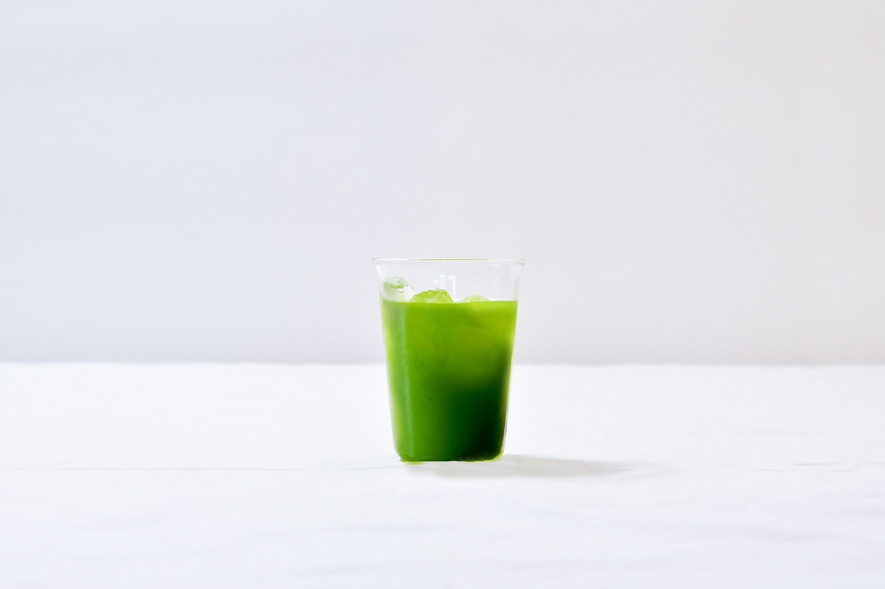
Use in lattes, iced beverages, smoothies, or seasonal specialty drinks. Caffeine-free versatility for all-day service.
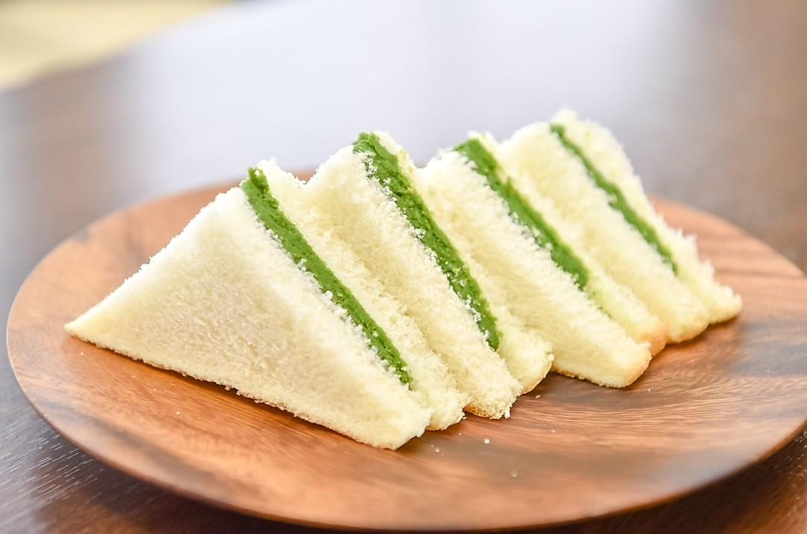
Layer into soft serve, pastries, baked goods, or plated dessert concepts. Vibrant color and a clean, versatile flavor profile.
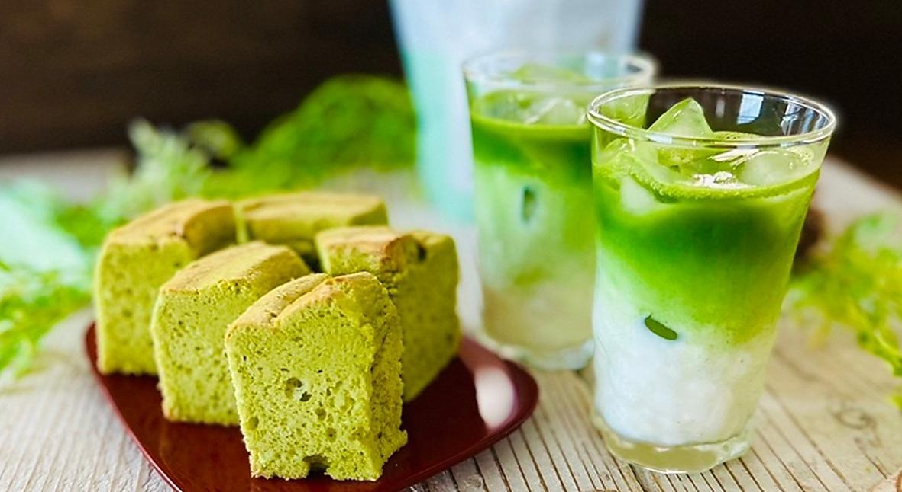
Give your menu a distinct Japanese ingredient story beyond conventional matcha — naturally caffeine-free with a unique origin narrative.
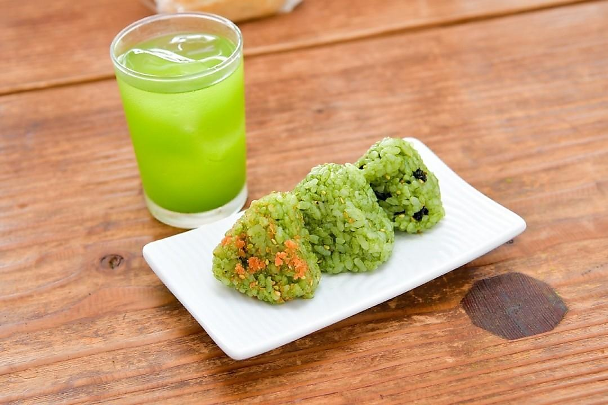
Kuwa Matcha blended into rice gives each onigiri a vivid green color and a subtle, earthy flavor — a natural fit for Japanese-inspired cafe menus and bento concepts.
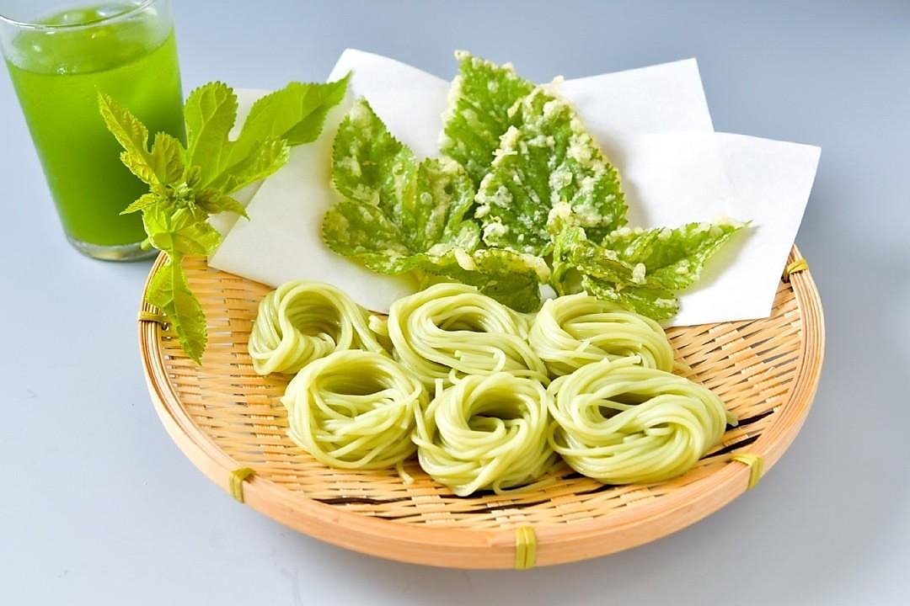
Incorporated into soba dough, Kuwa Matcha creates naturally green noodles with a clean, wholesome character. Served alongside tempura mulberry leaf for a fully ingredient-led dish.
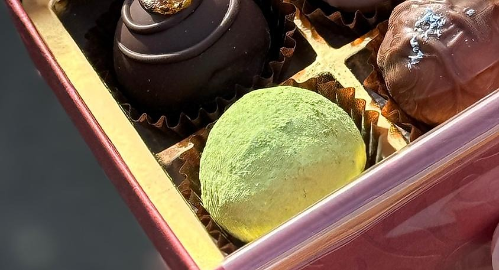
A delicate dusting of Kuwa Matcha transforms confections into premium, Japan-inspired creations — ideal for gifting, omakase dessert courses, or specialty retail formats.
Our Products
Premium Japanese mulberry green powder. Produced in Japan, made from mulberry leaf, naturally caffeine-free. Suitable for beverages, smoothies, desserts, and daily routines.
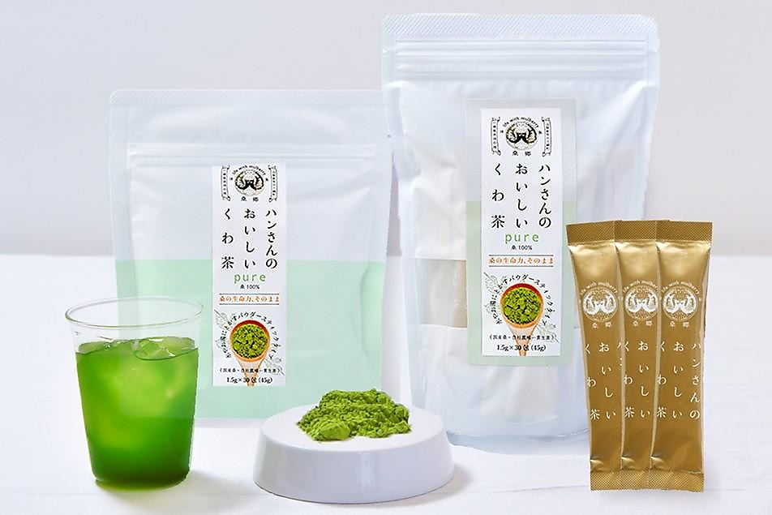

100g Pouch
A premium retail pouch for customers seeking a versatile daily-use format. The flagship Kuwanosato format for home and everyday use.
Shop Now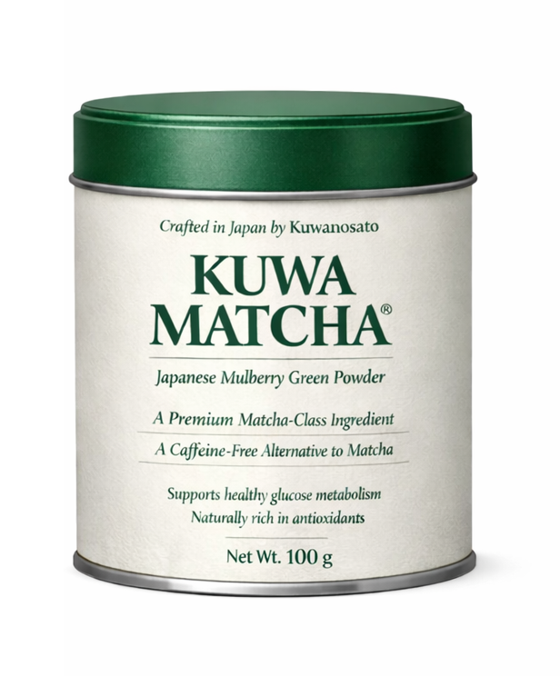
100g Tin
A compact, giftable format that supports premium presentation and countertop appeal. Refined packaging for a refined ingredient.
Shop Now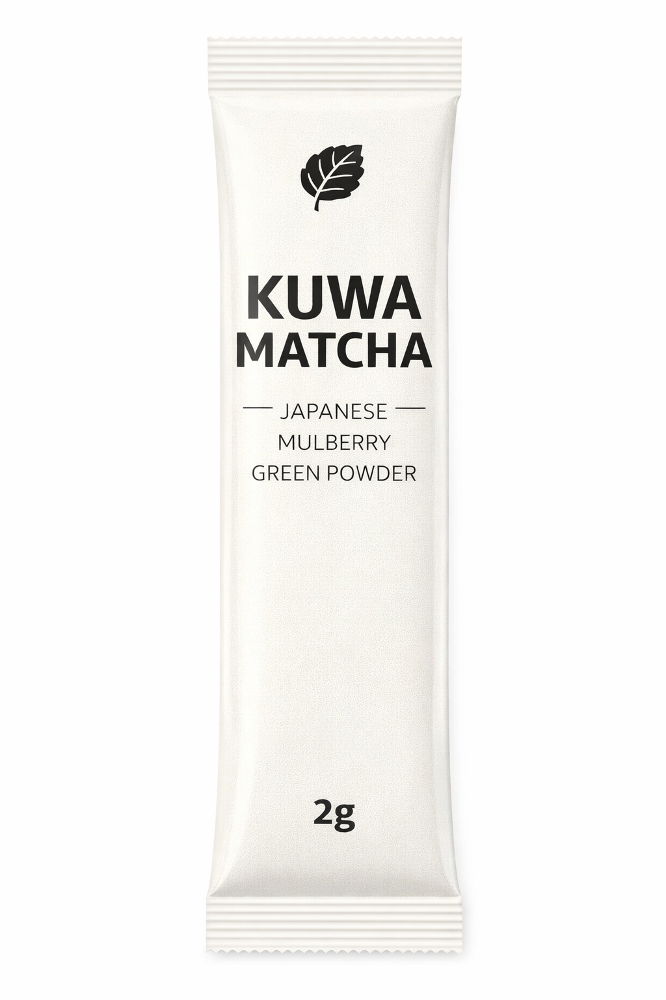
1 Serving · 2g
A convenient single-serve format for tasting, discovery, and hospitality use. The ideal introduction to Kuwa Matcha.
Shop Now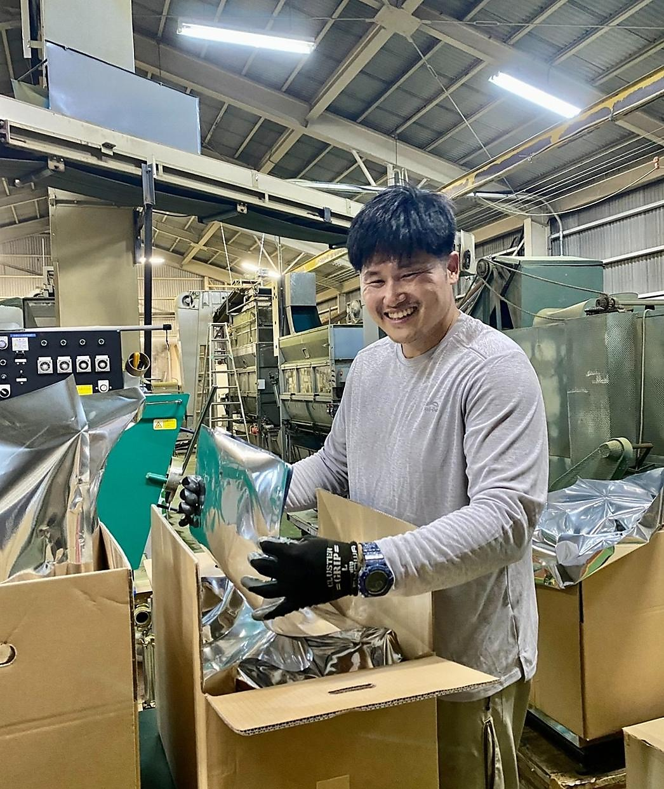
Trust & Provenance
Kuwanosato is positioned as a trusted Japanese producer with a premium ingredient story, disciplined packaging, and a clear sense of origin. Every format reflects the same commitment — traceable, refined, and reliable.
Our production process reflects a deep respect for the mulberry leaf, from careful cultivation in Yamanashi to the precision of the finished powder. The result is an ingredient your customers can trust.
Partnership
Bring Japanese mulberry innovation to your cafe, menu, or retail assortment. We welcome conversations with wholesale buyers, culinary teams, foodservice operators, and aligned distribution partners.
Get in Touch
Have a question about the product, sourcing, or partnership opportunities? Send us a message and the Kuwanosato team will follow up with the right information.
Thank you for reaching out. Your message has been received and someone from the team will follow up soon.
Something went wrong. Please try again, or email us directly.